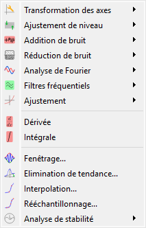
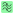
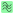

Traitement des signaux#
Cette section décrit les fonctionnalités de traitement de signal disponibles dans DataLab.
Voir aussi
Opérations sur les signaux pour plus d’informations sur les opérations qui peuvent être effectuées sur les signaux, ou Analyse sur les signaux pour des informations sur les fonctionnalités d’analyse des signaux.

Capture d’écran du menu « Traitement ».#
Lorsque le « Panneau Signal » est sélectionné, les menus et barres d’outils sont mis à jour pour fournir les actions liées aux signaux.
Le menu « Traitement » permet d’effectuer divers traitements sur les signaux sélectionnés, tels que le lissage, la normalisation, ou encore l’interpolation.
Transformation des axes#
Étalonnage linéaire#
Crée un signal à partir de l’étalonnage linéaire (par rapport aux axes X et Y) de chaque signal sélectionné.
Paramètre |
Étalonnage linéaire |
|---|---|
Axe des X |
\(x_{1} = a.x_{0} + b\) |
Axe des Y |
\(y_{1} = a.y_{0} + b\) |
Permuter les axes X/Y#
Crée un signal à partir des données inversées X/Y du signal sélectionné.
Inverser l’axe des X#
Crée un signal à partir des données inversées de l’axe des X du signal sélectionné.
Remplacer X par le Y d’un autre signal#
Crée un nouveau signal en combinant deux signaux, en utilisant les valeurs Y du second signal comme coordonnées X pour les valeurs Y du premier signal.
Cette fonctionnalité est particulièrement utile pour les scénarios d’étalonnage, tels que :
Appliquer un étalonnage en longueur d’onde aux données de spectroscopie
Utiliser un signal de référence étalonné pour recalibrer les données de mesure
Combiner des signaux où l’un contient des points d’étalonnage
Les deux signaux doivent avoir le même nombre de points. L’opération utilise directement les tableaux Y sans interpolation.
Entrée |
Description |
|---|---|
Signal 1 |
Fournit les données Y pour le signal de sortie |
Signal 2 |
Fournit les données Y qui deviennent les coordonnées X du signal de sortie |
Mode X-Y#
Crée un nouveau signal en simulant le mode X-Y d’un oscilloscope.
Cette opération trace un signal en fonction d’un autre en :
Trouvant la plage X qui se chevauche entre les deux signaux
Rééchantillonnant les deux signaux sur une grille X commune dans ce chevauchement
Utilisant les valeurs Y rééchantillonnées comme coordonnées (Y du premier signal comme X, Y du second signal comme Y)
Note
Ceci est différent de « Remplacer X par le Y d’un autre signal » car il effectue une interpolation pour gérer les signaux avec des tableaux X différents.
Convertir en coordonnées cartésiennes#
Crée un signal en convertissant les coordonnées cartésiennes en coordonnées polaires.
Cette fonction suppose que l’axe des x représente le rayon et l’axe des y l’angle.
Avertissement
Un rayon ne peut pas être négatif. Toute valeur négative est écrêtée à 0.
Convertir en coordonnées polaires#
Crée un signal en convertissant les coordonnées cartésiennes en coordonnées polaires.
Ajustement des niveaux#
Normaliser#
Crée un signal à partir de la normalisation de chaque signal sélectionné par maximum, amplitude, somme, énergie ou RMS :
Paramètre |
Normalisation |
|---|---|
Maximum |
\(y_{1}= \dfrac{y_{0}}{\max\left(y_{0}\right)}\) |
Amplitude |
\(y_{1}= \dfrac{y_{0}'}{\max\left(y_{0}'\right)}\) with \(y_{0}'=y_{0}-\min\left(y_{0}\right)\) |
Aire |
\(y_{1}= \dfrac{y_{0}}{\sum_{n=0}^{N}y_{0}[n]}\) |
Energie |
\(y_{1}= \dfrac{y_{0}}{\sqrt{\sum_{n=0}^{N}\left|y_{0}[n]\right|^2}}\) |
RMS |
\(y_{1}= \dfrac{y_{0}}{\sqrt{\dfrac{1}{N}\sum_{n=0}^{N}\left|y_{0}[n]\right|^2}}\) |
Ecrêtage#
Crée un signal à partir de l’écrêtage de chaque signal sélectionné.
Soustraction d’offset#
Crée un signal à partir de la soustraction d’offset de chaque signal sélectionné. Cette opération est réalisée en soustrayant la valeur moyenne d’une plage définie par l’utilisateur.
Ajout de bruit#
Génère de nouveaux signaux en ajoutant le même bruit à chaque signal sélectionné. Les types de bruit disponibles sont :
Bruit |
Description |
|---|---|
Gaussien |
Distribution normale |
Uniforme |
Distribution uniforme |
Poisson |
Distribution de Poisson |
Réduction de bruit#
Crée un signal à partir du débruitage de chaque signal sélectionné.
Les filtres suivants sont disponibles :
Filtre |
Formule/implémentation |
|---|---|
Filtre gaussien |
|
Moyenne mobile |
|
Médiane mobile |
|
Filtre de Wiener |
Analyse de Fourier#
Complément de zéro#
Crée un signal à partir du complément de zéro de chaque signal sélectionné.
Les paramètres suivants sont disponibles :
Paramètre |
Description |
|---|---|
Stratégie |
Stratégie de complément de zéro (voir ci-dessous) |
Nombre de points |
Longueur personnalisée (si strategy est « custom ») |
La stratégie de complément de zéro fait référence à la méthode utilisée pour augmenter la longueur du signal, et elle peut être l’une des suivantes :
Stratégie |
Description |
|---|---|
next_pow2 |
Puissance de 2 supérieure (e.g. 1024 → 2048) |
double |
Double la longueur (e.g. 1024 → 2048) |
triple |
Triple la longueur (e.g. 1024 → 3072) |
custom |
Longueur personnalisée (définie par l’utilisateur) |
Filtres fréquentiels#
Crée un signal à partir de l’application d’un filtre fréquentiel à chaque signal sélectionné.
Les filtres suivants sont disponibles :
Filtre |
Description |
|---|---|
Low-pass |
Filtre les hautes fréquences, au-dessus d’une fréquence de coupure |
High-pass |
Filtre les basses fréquences, en-dessous d’une fréquence de coupure |
 Band-pass |
Filtre les fréquences en dehors d’une plage |
 Band-stop |
Filtre les fréquences à l’intérieur d’une plage |
Pour chaque filtre, les méthodes suivantes sont disponibles :
Méthode |
Description |
|---|---|
Bessel |
Filtre de Bessel, utilisant la fonction scipy.signal.bessel |
Filtre idéal |
Filtre idéal (rectangulaire) dans le domaine fréquentiel |
Butterworth |
Filtre de Butterworth, utilisant la fonction scipy.signal.butter |
Chebyshev I |
Filtre de Chebyshev de type I, utilisant la fonction scipy.signal.cheby1 |
Chebyshev II |
Filtre de Chebyshev de type II, utilisant la fonction scipy.signal.cheby2 |
Elliptic |
Filtre elliptique, utilisant la fonction scipy.signal.ellip |
Ajustement#
Ajuste un modèle à chaque signal sélectionné. Cela peut être fait automatiquement ou via une boîte de dialogue d’ajustement de courbe interactive.
Modèle |
Equation |
|---|---|
Linéaire |
\(y = c_{0} + c_{1} \cdot x\) |
Polynomial |
\(y = c_{0} + c_{1} \cdot x + c_{2} \cdot x^2 + ... + c_{n} \cdot x^n\) |
Gaussien |
\(y = y_{0} + \dfrac{A}{\sqrt{2 \pi} \sigma} \exp\left(-\dfrac{1}{2} \left(\dfrac{x - x_{0}}{\sigma}\right)^2\right)\) |
Lorentzien |
\(y = y_{0} + \dfrac{A}{\pi \sigma} \cdot \dfrac{1}{1+\left(\dfrac{x-x_{0}}{\sigma}\right)^2}\) |
Voigt |
\(y = y_{0} + A \cdot \dfrac{\Re\left(\exp(-z^2) \cdot \operatorname{erfc}(-j \cdot z)\right)}{\sqrt{2 \pi} \sigma}\) avec \(z = \dfrac{x - x_{0} - j \cdot \sigma}{\sqrt{2} \sigma}\) |
Multi-gaussien |
\(y = y_{0} + \sum_{i=0}^{N}\dfrac{A_{i}}{\sqrt{2 \pi} \sigma_{i}} \exp\left(-\dfrac{1}{2} \left(\dfrac{x - x_{0,i}}{\sigma_{i}}\right)^2\right)\) |
Multi-lorentzien |
\(y = y_{0} + \sum_{i=0}^{N}\dfrac{A_{i}}{\pi \sigma_{i}} \cdot \dfrac{1}{1 + \left(\dfrac{x - x_{0,i}}{\sigma_{i}}\right)^2}\) |
Planck |
\(y = y_{0} + A\cdot \dfrac{2h \cdot c^2}{\lambda^5} \cdot \left(\exp\left(\dfrac{h \cdot c}{\lambda \cdot k \cdot T}\right)-1\right)^{-1}\) |
Deux demi-gaussiennes |
\(y = y_{0} + A \cdot \dfrac{1}{\sqrt{2 \pi} \sigma_{0}} \cdot \exp\left(-\dfrac{1}{2}\left(\dfrac{x - x_{0}}{\sigma_{0}}\right)^2\right)\) si \(x < x_{0}\)
\(y = y_{0} + A \cdot \dfrac{1}{\sqrt{2 \pi} \sigma_{1}} \cdot \exp\left(-\dfrac{1}{2}\left(\dfrac{x - x_{1}}{\sigma_{1}}\right)^2\right)\) sinon
|
Deux exponentielles dos à dos |
\(y = y_{0} + A_{1} \cdot \exp\left(-x/\tau_{1}\right)\) si \(x < 0\)
\(y = y_{0} + A_{2} \cdot \exp(-x/\tau_{2})\) sinon
|
Exponentielle |
\(y = y_{0} + A \exp\left(B \cdot x\right)\) |
Sinusoïdal |
\(y = y_{0} + A \sin\left(2 \pi f \cdot x + \phi\right)\) |
Fonction de distribution cumulative (CDF) |
\(y = y_{0} + A \erf\left(\dfrac{x - x_{0}}{\sqrt{2} \sigma}\right)\) |
Fenêtrage#
Crée un signal à partir de l’application d’une fonction de fenêtrage à chaque signal sélectionné.
Les fonctions de fenêtrage suivantes sont disponibles :
Fonction de fenêtrage |
Référence |
|---|---|
Barthann |
|
Bartlett |
|
Blackman |
|
Blackman-Harris |
|
Bohman |
|
Boîte (rectangulaire) |
|
Cosinus |
|
Exponentielle |
|
Flat top |
|
Gaussien |
|
Hamming |
|
Hann |
|
Kaiser |
|
Lanczos |
|
Nuttall |
|
Parzen |
|
Taylor |
|
Tukey |
Elimination de tendance#
Crée un signal à partir de l’élimination de tendance de chaque signal. Cette fonctionnalité est basée sur la fonction scipy.signal.detrend de SciPy.
Les paramètres suivants sont disponibles :
Paramètre |
Description |
|---|---|
Méthode |
Méthode d’élimination de tendance : “linéaire” ou “constante”. Voir la fonction scipy.signal.detrend de SciPy. |
Interpolation#
Crée un signal à partir de l’interpolation de chaque signal sélectionné, par rapport à l’axe X d’un second signal (qui peut être l’un des signaux sélectionnés).
Les méthodes d’interpolation suivantes sont disponibles :
Méthode |
Description |
|---|---|
Linéaire |
Interpolation linéaire, utilisant la fonction interp de NumPy. |
Spline |
Interpolation par spline cubique, utilisant la fonction scipy.interpolate.splev de SciPy. |
Quadratique |
Interpolation quadratique, utilisant la fonction polyval de NumPy. |
Cubique |
Interpolation cubique, utilisant la classe Akima1DInterpolator de SciPy. |
Barycentrique |
Interpolation barycentrique, utilisant la classe BarycentricInterpolator de SciPy. |
PCHIP |
Interpolation par polynôme de Hermite cubique par morceaux (PCHIP), utilisant la classe PchipInterpolator de SciPy. |
Rééchantillonnage#
Crée un signal à partir du rééchantillonnage de chaque signal.
Les paramètres suivants sont disponibles :
Paramètre |
Description |
|---|---|
Méthode |
Méthode d’interpolation (voir section précédente) |
Valeur de remplissage |
Valeur de remplissage pour l’interpolation (voir section précédente) |
Xmin |
Borne inférieure |
Xmax |
Borne supérieure |
Mode |
Mode de rééchantillonnage : pas ou nombre de points |
Pas |
Pas de rééchantillonnage |
Nombre de points |
Nombre de points de rééchantillonnage |
Analyse de stabilité#
Crée un signal à partir de l’analyse de stabilité de chaque signal
Les méthodes d’analyse de stabilité suivantes sont disponibles :
Fonction |
Description |
|---|---|
Variance d’Allan |
Mesure de la stabilité d’un signal : définie comme la variance de la différence entre deux mesures successives en fonction de l’intervalle de temps entre elles. |
Ecart-type d’Allan |
Racine carrée de la variance d’Allan. |
Ecart-type d’Allan avec recouvrement |
Une version plus robuste de la variance d’Allan qui recoupe les segments successifs pour améliorer la confiance statistique. |
Variance d’Allan modifiée |
Une variation de la variance d’Allan qui tient compte du bruit de phase en introduisant une opération de filtrage. |
Variance de Hadamard |
Une alternative à la variance d’Allan, plus robuste aux dérives de fréquence linéaires dans le signal. |
Variance totale |
Etend le concept de variance d’Allan pour couvrir tous les intervalles de moyenne possibles. |
Déviation temporelle |
Dérivée de la déviation d’Allan, quantifie la stabilité en termes de temps plutôt que de fréquence. |
Note
L’option « Toutes les analyses de stabilité » permet de calculer toutes les méthodes d’analyse de stabilité en une seule fois.